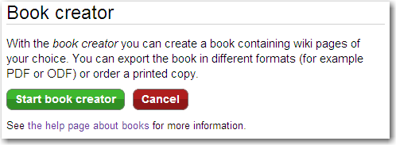
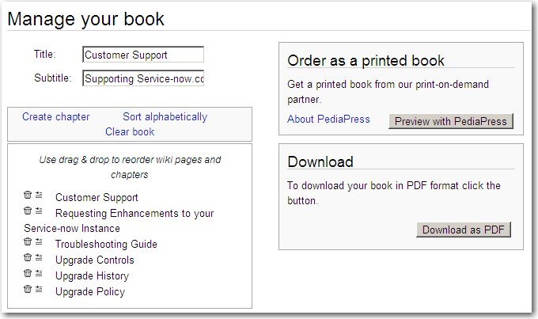

Help:Books
From ServiceNow Wiki
1 Overview
The Book Creator tool has been provided to easily group pages of the wiki together and export them to PDF. This can be done in one of two ways:
The book will always populate with the most recent version of the articles at the time of download.
2 Downloading a Pre-Made Book
To download a pre-made book, select a book from the Bookshelf or from a link in a topic box (). Select PDF to download the PDF.
{kind=link}
{kind=link}
3 Creating a Personal Book
In addition to downloading pre-made books, personal books can be made using the book creator tool to group together any set of wiki pages.
- Click Create a Book under the PRINT section of the wiki navigation pane.
- The book creator page appears.
- 
- Click Start book creator.
- To add a page to a book, navigate to the page and click Add this page to your book in the book creator tool.
- Click Remove this page from your book to remove a page.
- When you have added all the desired pages to your book, click Show book in the book creator tool.
- The book management page appears.
- 
- Add a Title and Subtitle for the book.
- [Optional] Customize the book by adding chapters or reordering pages.
- Download or order a copy of your book:
- Click Download as PDF to download the book as a PDF file. Note that some users have experienced issues when printing using Adobe PDF software. An alternative PDF reader should be used if any printing errors occur.
- Click Preview with PediaPress to render a preview of your book on a third-party printing service website. You can order a printed copy of the book.
{kind=link}
{kind=link}
{kind=link}